A потеряна
Команда: «A потеряна, двое, бомба, я в Мейне».
Остальные: свободный идёт в Девятку; Улица держит Мейн, Рампа — выход из Лобби. После подтверждения установки возвращаем точку вдвоём-втроём.
CS2 · карта Нюк · тренер L!S · визуальная версия
Общие правила команды, понятная защита и три простых варианта атаки.
Общее правило для всех карт
Дефолт — заранее согласованное начало раунда без раннего решения идти всей пятёркой на одну точку.
Команда распределяется по ключевым направлениям. Игрок знает, какой выпад соперника он контролирует и кому передаёт зону при уходе.
Первый проверяет контакт, второй держит расстояние для размена. Одиночные игроки безопасно следят за выпадами и не начинают ненужную дуэль.
Слушаем гранаты и шаги, замечаем слабое место защиты. Гранаты тратим ради занятия пространства или помощи товарищу.
После информации пятёрка собирается на выход, меняет направление или сохраняет контроль. Пока команды нет, продолжается дефолт.
За атаку: распределённый контроль до выбора точки. За защиту: стартовая расстановка и правила перетяжки до подтверждения атаки.
Основание: Refrag · что такое дефолт; тренер m1cks о том, как выходы строятся из основной структуры команды: интервью HLTV.
Общее правило гранат
Ослепляющая создаёт перестрелку товарищу; дым даёт переход или отход; огонь останавливает либо выталкивает соперника.
Правила из командной методички
Командные решения
Основание: B1ad3 о структуре, общем плане и предложениях игроков.
Командная система
Свобода заканчивается там, где ломается действие товарища. Это правило работает на любой карте.
Основание: B1ad3 о системе со свободой решений в конкретных ситуациях.
Общие правила
Место / число / бомба / что делаю
Рампа: двое, бомбы не видел, отхожу на B.
Улица: трое за стенкой, двое прошли в Секрет, остаюсь в Мейне.
Умер в Будке: двое вошли на A, один на Балках, бомбу не видел.
«Вижу двоих в Секрете» — факт. «Думаю, выходят B» — предположение. Всегда называем разницу.
Один точный отчёт — и тишина. Живые игроки должны слышать шаги и текущую команду.
Единый язык · внутри
Единый язык · снаружи
Защита · видео
| Тема | Ссылка и время | Длина | Что смотрим | Ожидаемый вывод |
|---|---|---|---|---|
| Защита: расстановка | YouTube · канал sebcs 0:15–0:27 |
0:13 | Ответственность A, Рампы, Улицы и свободного игрока | Каждый называет свою зону и сведения, после которых имеет право уйти |
| Защита Улицы | YouTube · канал sebcs 4:20–6:08 |
1:49 | Гранаты против быстрого выхода и безопасное занятие Красного | Остановить первую волну, сообщить число и остаться живым |
| Защита A | YouTube · канал sebcs 1:55–4:19 |
2:25 | Зажигательные в Скрип и Будку, сохранение дыма | Два защитника держат разные входы и не тратят всё заранее |
| Защита Рампы | YouTube · канал sebcs 0:28–1:54 |
1:27 | Порядок зажигательной и дыма при разном темпе | Задержать выход и выжить важнее первого убийства |
На звонке показываем один фрагмент по самой слабой зоне, не более двух минут. Остальное — материал до или после игры.
Защита · основа
2 на A / 1 Улица / 1 Рампа / 1 свободный
| Роль · первый прогон | Старт | Ответственность |
|---|---|---|
| A · Будка D4ba | Будка / точка | Будка, ближняя линия A, безопасный отход за точку |
| A · Скрип middle | Скрип / Балки | Скрип и помощь первому. Не смотрит тот же угол |
| Улица d0lfero | Мейн / ящики | Увидеть стенку и переход, выжить и назвать число |
| Рампа L!S | Верх Рампы | Контакт, число, задержка и отход к B |
| Свободный Reconnecting | Девятка / между этажами | Первым закрывает подтверждённую дыру |
Почему так: D4ba силён в первых контактах; middle и Reconnecting назначены на поддержку по командной диагностике. Улица и Рампа — проверочные позиции, а не вывод из статистики.
Это не постоянные места. После двух прогонов можно поменяться целой ролью: позиция + гранаты + команды.
Защита · схема основы
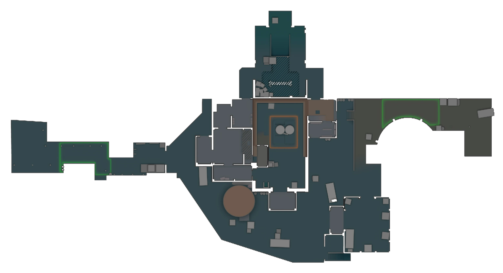
Защита · реакция 1
Слышит двух и больше — говорит: РАМПА, ТРОЕ, БОМБА ЕСТЬ/НЕТ. При быстром выходе сначала зажигательная, затем дым.
Занимает другую линию или даёт названную ослепляющую. Подсадка — разовая ловушка, а не постоянная позиция.
Коротко говорит СТОЮ либо ОТХОЖУ НА B. Повторно не выглядывает без помощи.
Если Рампа тиха, уйти с неё можно только после слов РАМПУ ПЕРЕДАЛ и ответа нового ответственного.
Продолжение: задержали выход и играем вдвоём с разных углов. Отмена удержания: гранаты закончились или преимущество потеряно — живыми отходим к B.
Защита · Рампа на экране
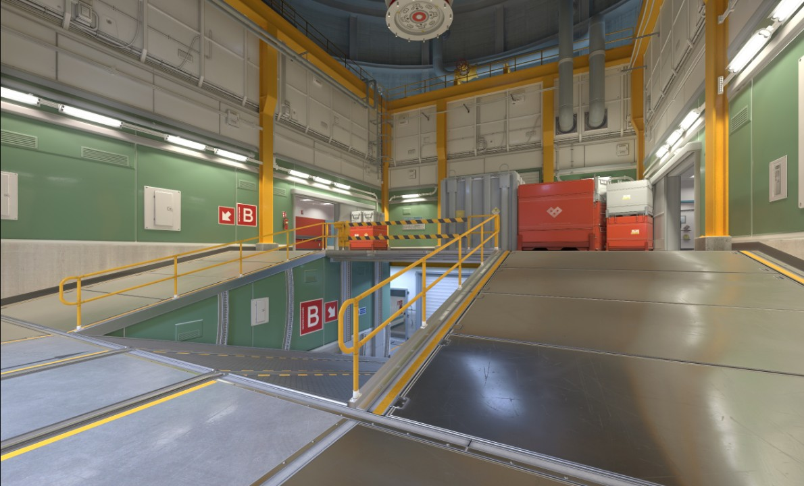
1Вход из Трофейки 2Первый контакт 3Вторая линия 4Отход к BЗащита · реакция 2
Из Мейна, от ящиков или из Гаража замечает дым, считает прошедших и не открывается всем углам сразу.
Если Улицу атакуют часто, принимает спуск из укрытия и не выглядывает в дым без ослепляющей.
d0lfero говорит: УЛИЦА ПОТЕРЯНА, ДВОЕ К СЕКРЕТУ, УХОЖУ В МЕЙН. Reconnecting держит следующий проход.
Общая перетяжка начинается после двух увиденных игроков, бомбы или контакта внизу. Один дым ещё не означает атаку B.
Продолжение: тормозим переход, считаем игроков и сохраняем перекрёстные линии. Отмена удержания: Улица потеряна — не возвращаем её по одному, закрываем Секрет и Мейн.
Защита · Улица на экране
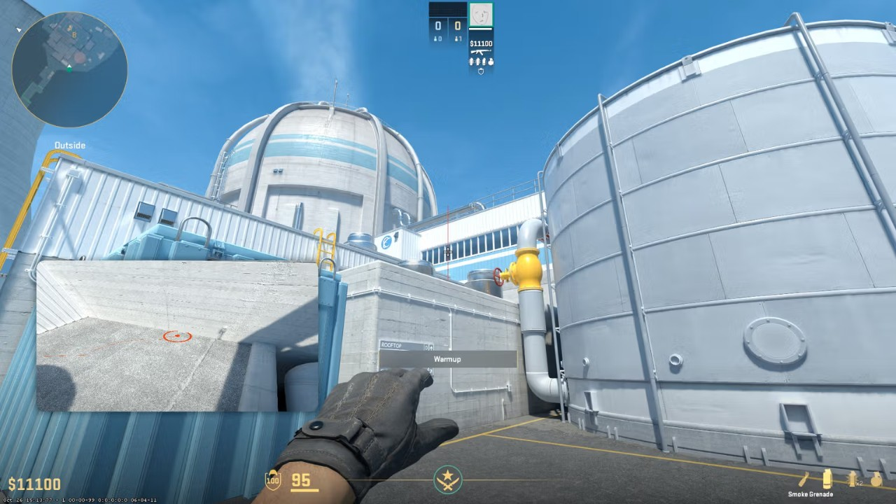
1Линия Гаража 2Мейн 3Стенка дымов 4Путь в СекретЗащита · реакция 3
Игроки не повторяют один угол: каждый заранее знает свой вход и путь безопасного отхода.
D4ba даёт огонь в Будку, middle — в Скрип. Дым используем после огня или на второй путь атаки.
Увидев атаку, называем число и не отдаём повторную дуэль без ослепляющей товарища.
Два готовых игрока сходятся из Девятки и Мейна, называют одну ослепляющую и входят вместе.
Продолжение: против медленной атаки держим гранаты до первых сведений. Отмена удержания: опорник отходит и ждёт совместный возврат, а не выглядывает один.
Защита · точка A на экране
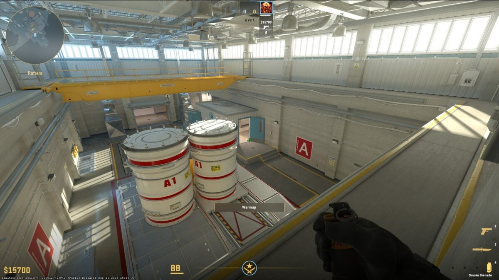
1Девятка 2Будка 3Скрип 4МейнЗащита · зона прорвана
Команда: «A потеряна, двое, бомба, я в Мейне».
Остальные: свободный идёт в Девятку; Улица держит Мейн, Рампа — выход из Лобби. После подтверждения установки возвращаем точку вдвоём-втроём.
Команда: число, направление к Секрету и видел ли бомбу.
Остальные: опорник отходит в Гараж или Мейн; свободный проверяет Секрет из укрытия. A и Рампа не уходят по одному дыму.
Команда: «Двое Секрет, бомба есть/нет, ухожу в низ».
Остальные: ближайший закрывает Декон или Двойные двери; Рампа спускается на B; один защитник остаётся наверху до подтверждения бомбы.
Команда: «Трое Рампа, бомба, отхожу B».
Остальные: свободный занимает вторую линию низа; Улица держит Секрет от окружения; с A уходит один только после продолжения атаки вниз.
Проверено по разбору серии Astralis: опорники Рампы и Улицы добывают сведения, задерживают и сохраняют жизнь, а команда заранее меняет роли и собирается на совместный возврат. Источники: HLTV · Astralis на Nuke; B1ad3 о критичной информации на Nuke.
Атака · постоянное правило
| Роль · первый прогон | Зона | До общего решения |
|---|---|---|
| Первый Лобби D4ba | Будка | Первый контакт только под ослепляющую и готовый размен |
| Поддержка Лобби middle | Скрип / Лобби | Ослепляющая, размен и контроль выпада защиты |
| Первый по Улице d0lfero | Красный защиты | Проверяет ближний угол и первым собирает сведения |
| Дым и размен L!S | Дым в Гараж | Сразу бросает дым, затем идёт вторым за d0lfero |
| Связующий Reconnecting | Рампа / третьим по Улице | Соединяет направления и несёт бомбу не первым |
Основание первого прогона: D4ba — сильный первый контакт; middle — основная поддержка гранатами; Reconnecting — связь и безопасное положение бомбы. d0lfero первым проверяет Улицу, а L!S после быстрого дыма идёт на размен.
До команды на выход пара Лобби не уходит. Роли можно менять после прогона; бомба не идёт первой.
Атака · тактика 1
Команда: ОСЛЕПЛЯЮ РАМПУ. Первый начинает движение на взрыве, не раньше.
Первый чистит ближайший угол, второй смотрит его бой и сохраняет расстояние для размена.
Считаем защитников и слушаем низ. За уходящим опорником не гонимся.
Последнюю гранату сохраняем на Декон — дверь между B и коридором — или на Двойные двери точки B.
Продолжение: заняли верх и вместе спускаемся на B. Отмена: два защитника, плотные гранаты или смерть без размена — возвращаемся в Лобби или меняем направление.
Атака · Рампа на экране
Атака · тактика 2
Дым и зажигательная летят одновременно. Другие гранаты без задачи не добавляем.
D4ba и игрок размена выходят из Будки на взрыве ослепляющей.
Будка чистит ближний угол и Балки; Скрип — Вентиляцию и место установки бомбы.
Заходит только после команды ТОЧКА, когда первые углы уже проверены.
Продолжение: два входа открываются одновременно и игроки остаются на расстоянии размена. Отмена: время входов разошлось — говорим ОТМЕНА A и собираемся заново.
Атака · точка A на экране
Атака · тактика 3
Прыжковый бросок с места появления. d0lfero в это же время начинает движение к Улице — команда не ждёт приземления дыма.
Первый проверяет ближний угол у Красного защиты, второй смотрит его бой и готов к размену.
D4ba и middle всё это время держат Будку и Скрип в Лобби, чтобы защита не обошла основную группу.
СЕКРЕТ ведёт к B; МЕЙН соединяет группу с выходом Лобби на A.
Важно: дым закрывает Гараж, но не делает путь в Секрет полностью безопасным — проверяем Мейн и Девятку, при необходимости просим ослепляющую. Отмена: дым не лёг или первый погиб без размена.
Атака · Улица на экране
Защита · обязательные гранаты
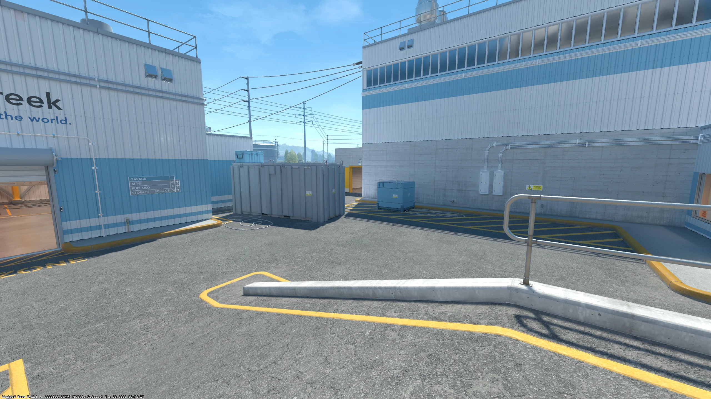
Владелец: d0lfero · резерв: L!S
Бросок: шагом, прыжок + левая кнопка.
Движение · зачёт 3/3
Открыть прямую схему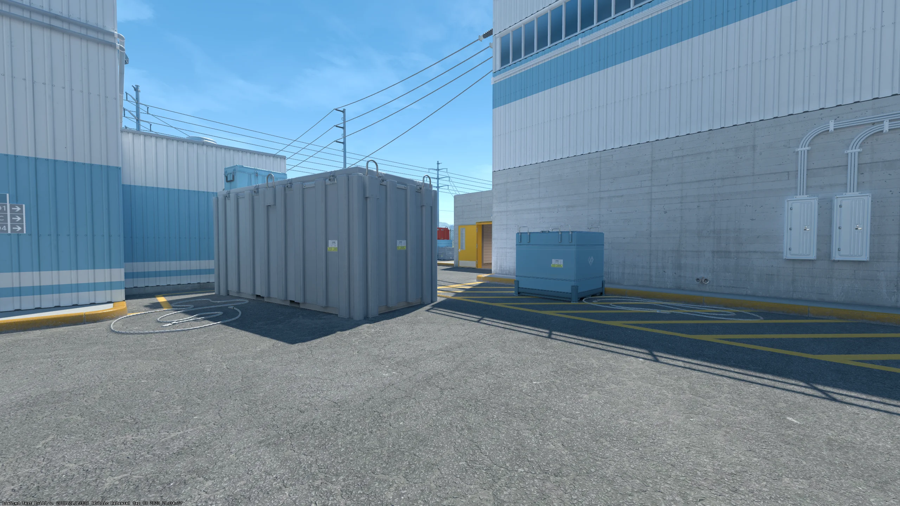
Владелец: Reconnecting · резерв: d0lfero
Бросок: на бегу, левая кнопка.
Движение · зачёт 3/3
Открыть прямую схему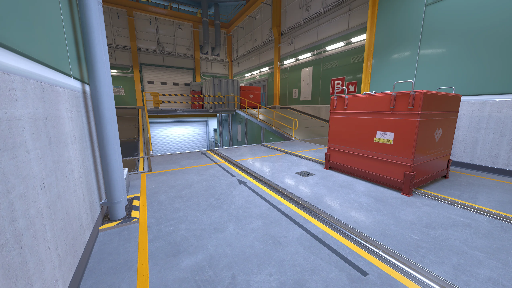
Владелец: L!S · резерв: middle
Бросок: с места, прыжок + левая кнопка.
Точный · зачёт 5/5
Открыть прямую схему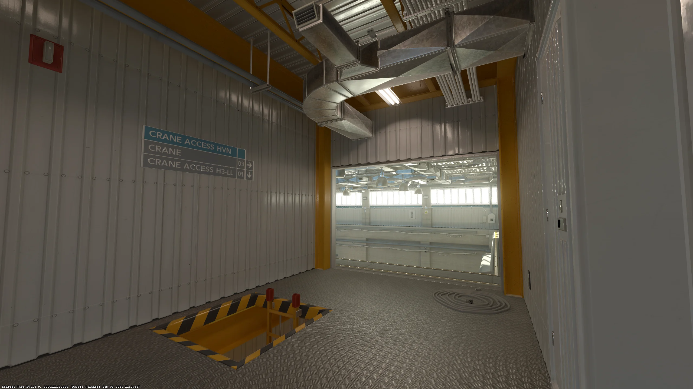
Владелец: D4ba · резерв: Reconnecting
Бросок: с места, левая кнопка.
Точный · зачёт 5/5
Открыть прямую схему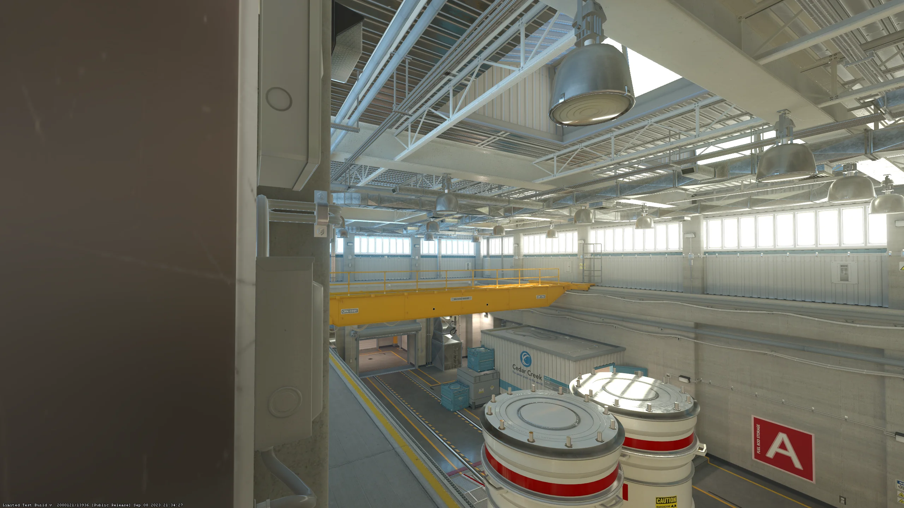
Владелец: middle · резерв: D4ba
Бросок: с места, левая кнопка.
Точный · зачёт 5/5
Открыть прямую схемуЗачёт: 5/5 для точного броска с места; 3/3 для броска в движении. Без подсказки, граната выполняет указанную задачу.
Атака · обязательные гранаты
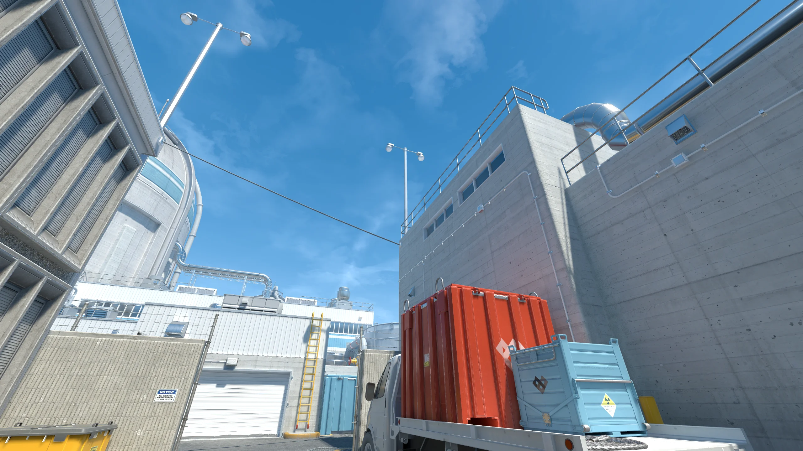
Владелец: L!S · резерв: d0lfero
Бросок: с места, прыжок + левая кнопка.
Точный · зачёт 5/5
Открыть прямую схему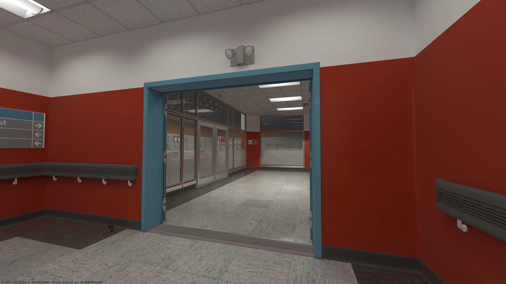
Владелец: Reconnecting · резерв: middle
Бросок: на бегу, левая кнопка.
Движение · зачёт 3/3
Открыть прямую схему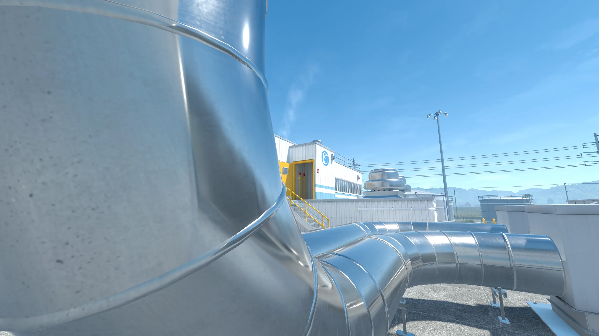
Владелец: Reconnecting · резерв: L!S
Бросок: с места, прыжок + обе кнопки.
Точный · зачёт 5/5
Открыть прямую схему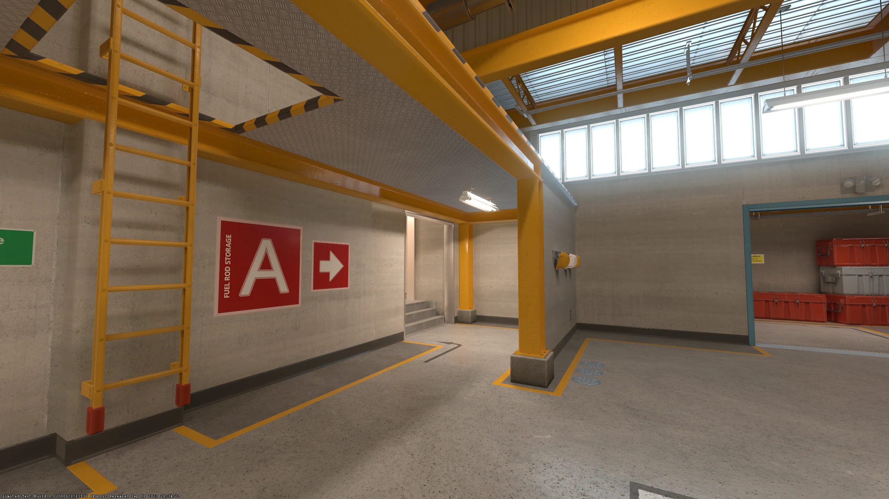
Владелец: middle · резерв: D4ba
Бросок: на бегу, левая кнопка.
Движение · зачёт 3/3
Открыть прямую схему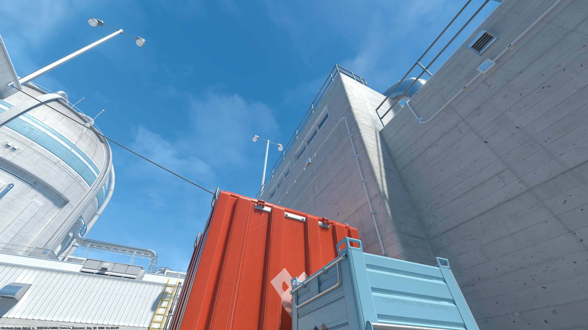
Владелец: d0lfero · резерв: L!S
Бросок: с места, прыжок + левая кнопка.
Точный · зачёт 5/5
Открыть прямую схемуЗачёт: 5/5 для точного броска с места; 3/3 для броска в движении. Резерв исполняет только после явной передачи роли.
После звонка · домашняя практика
| Первый прогон | Атака | Защита и совместная связка |
|---|---|---|
| D4ba первый Лобби | Выход из Будки на ослепляющей | Огонь в Будку · связка A с middle |
| middle поддержка Лобби | Ослепляющая в Будку | Огонь в Скрип · связка A с D4ba |
| d0lfero первый по Улице | Запасной дыма в Гараж · проверка Красного защиты | Огонь на Улицу · связка с L!S |
| L!S дым и размен | Дым в Гараж с места появления | Дым в Трофейку · связка Улицы с d0lfero |
| Reconnecting связующий | Ослепляющая на Рампу и дым в Мейн | ИКС-дым · запускает связки Рампы и A |
Если роли поменялись, игрок выполняет задание новой роли, а не сохраняет старый набор.
После звонка · 30 минут
Открыть свою ссылку. Две попытки с подсказкой, затем пять подряд без неё.
Три точных броска подряд. Перед каждым назвать условие раннего или позднего броска.
Дважды чисто: граната легла, команда сказана, первый вышел вовремя, второй готов к размену.
«Ник / роль / атака: X из 5 / защита: X из 3 / когда отменяю выход».
Финальная проверка
Зачёт — 5 из 6. Ошибка возвращает к нужному слайду и одному повторению без соперника.
Стрелки и пробел переключают слайды. Клавиша T запускает таймер. Клавиша F включает полный экран. Клавиша R показывает ответы на последнем слайде.